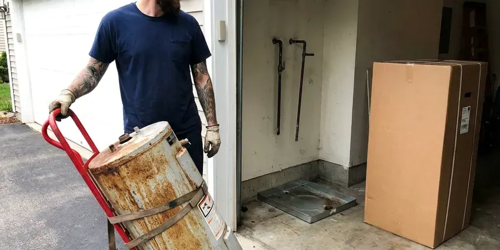
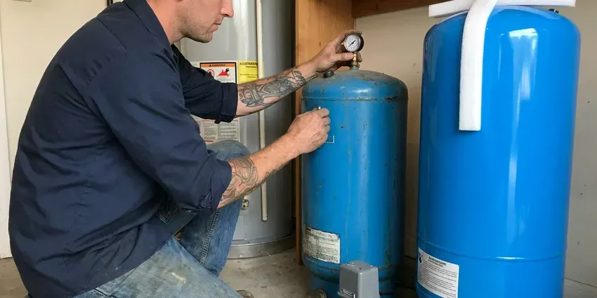

Tankless Water Heater Replacement in Mandeville, LA
Switch to endless hot water with a new tankless water heater in Mandeville, LA. Beau's Plumbing provides professional replacement services.
- Manufacturer Warranty Registration
- Top Brands Available
- Licensed Gas Line Technicians
- Fast Tankless Replacement

Endless Hot Water Starts With One Call in Mandeville, LA.
Our team is ready to help you pick and install the best tankless unit for your home's needs.
Dependable Tankless Water Heater Replacement Services in Mandeville, LA
When your old tankless unit is failing or you are ready to switch from a traditional tank, Beau's Plumbing offers dependable tankless water heater replacement. Our licensed plumbers make sure your new system is sized correctly and installed to meet local Mandeville, LA codes. That gives you on-demand hot water for years to come.
Our expertise includes:
- Proper venting and condensate drainage system setup.
- Careful removal and disposal of old water heaters.
- Careful sizing and installation of new tankless units.

Additional Plumbing Replacement Services in Mandeville, LA
When repairs are no longer enough, our replacement services in Mandeville, LA deliver modern, efficient equipment installed right.


Water Heater Replacement near Mandeville


Customers
Why Choose Beau's Plumbing for Tankless Water Heater Replacement in Mandeville, LA?
Municipal water in Louisiana comes from rivers and aquifers, and it ranges from fairly soft to moderately hard depending on the source. Hard water is rough on tankless heat exchangers, and many early failures trace back to scale and skipped flushing. We size, install and set up each replacement so it holds up to your local water supply.
- Endless Hot Water, Never run out of hot water, even during peak demand, a true luxury for busy Mandeville households with multiple showers or large families.
- Scale Protection, Every install includes isolation valves so the heat exchanger can be descaled without cutting into the pipes.
- Space Saving, Their compact design allows tankless units fit in smaller spaces, freeing up useful room in your utility closet or garage.
Citywide Coverage
Beau's Plumbing serves every neighborhood and community within Mandeville for all your tankless water heater replacement needs. Whether you are downtown or in the surrounding suburbs, our team is ready to deliver fast and professional service.
Experienced Team
Our team installs tankless heaters every week and trains on manufacturer-specific setup, including recirculation programming and altitude settings. That experience shortens install time and prevents callbacks.
Safety-First Approach
We take extra care with gas and water line connections, ventilation and pressure relief systems. You get a replacement that not only works perfectly but also meets the highest safety standards.
Trusted Certified Mandeville Plumbing Services Professionals
At Beau's Plumbing, we take pride in providing certified plumbing services throughout Mandeville, LA. Backed by leading industry credentials, our experienced plumbers combine technical skill with genuine customer care. Whether it is repair, installation, or maintenance, we follow strict safety and quality standards to deliver lasting results you can trust.
Call Us Now PHCC Plumbing Contractor Recognition
PHCC Plumbing Contractor Recognition Better Business Bureau (BBB) Accreditation
Better Business Bureau (BBB) Accreditation Angi Certified Pro
Angi Certified Pro ISO 9001 Quality Management Certification
ISO 9001 Quality Management CertificationDependable Tankless Water Heater Replacement Services in Mandeville, LA
Emergency Tankless Water Heater Replacement in Mandeville
A sudden tankless water heater failure can leave your Mandeville home without hot water, which is a major inconvenience. Beau's Plumbing offers emergency tankless water heater replacement to restore your hot water fast. We prioritize urgent situations, working to diagnose the issue and, if replacement is necessary, get a new unit installed as soon as possible. Our goal is to cut down your downtime and get your home back to normal with reliable hot water.

Navien Tankless Water Heater Replacement in Mandeville, LA
Navien tankless water heaters are popular for their condensing technology, delivering high efficiency and performance. When it is time for a Navien tankless water heater replacement in Mandeville, LA, you can count on Beau's Plumbing. We have broad experience with Navien's advanced systems, including their combination boiler and water heater units. Our installation process focuses on optimizing your new Navien's performance, so you benefit from its energy-saving features and reliable hot water output.
Tankless vs. Tank Water Heater Conversion in Mandeville, LA
Considering converting from a traditional tank water heater to a tankless system in your Mandeville, LA home? This is a common and beneficial upgrade, but it requires specialized expertise. We handle the entire conversion, which can involve rerouting gas lines, upgrading electrical service, modifying water lines and installing new venting. Our team makes for a smooth transition, so you can enjoy the long-term benefits of a modern, efficient tankless system.
Emergency Tankless Replacement in Mandeville, LA
A tankless heater that leaks from the heat exchanger or refuses to ignite can leave you with no hot water at all. We offer same-day emergency replacement for common models and can usually get a unit installed the day you call. If your exact model is not in stock, we can sometimes do a temporary repair to restore hot water while the replacement ships. We shut off gas and water to stop any leak on arrival. Call (504) 317-6869 any time your tankless quits.
Electric Tankless Water Heater Replacement in Mandeville, LA
For properties without natural gas access or those looking for an all-electric solution, electric tankless water heaters are a practical choice. Beau's Plumbing offers electric tankless water heater replacement services in Mandeville, LA. This often involves careful assessment of your home's electrical panel capacity, as these units require substantial amperage. We make sure your new electric tankless unit is installed safely and correctly, providing on-demand hot water without the need for gas lines.
Like-for-Like Tankless Swaps in Mandeville
When your existing tankless has a cracked heat exchanger or a failed control board that is not worth repairing, a direct replacement is often the fastest fix. We match the new unit to your current gas line, venting type and mounting location whenever possible. Many Rinnai and Navien models share similar footprints, which keeps wall patching to a minimum. We also replace the old service valves if they are corroded or seized. Most like-for-like swaps are done in four to six hours.
Recirculation Tankless Upgrades in Mandeville, LA
If you are tired of running the tap waiting for hot water, a tankless with a built-in recirculation pump can bring heat to the fixture in seconds. Navien A series and Rinnai units with internal pumps can use a dedicated return line or a crossover valve under the farthest sink. We program schedules so the pump runs only during your morning and evening peaks. That keeps gas use reasonable while saving thousands of gallons of wasted water a year. This upgrade is a favorite in long single-story ranch homes.

Rinnai Tankless Water Heater Replacement in Mandeville
Rinnai is a leading brand in the tankless water heater market, known for its quality and engineering. If your Rinnai unit is aging or malfunctioning, Beau's Plumbing provides expert Rinnai tankless water heater replacement in Mandeville. We make sure your new Rinnai unit is installed correctly, maximizing its efficiency and lifespan. Our technicians are familiar with the installation requirements and venting options for Rinnai models, so the upgrade goes cleanly.
Tankless Water Heater Replacement Near Me in Mandeville, LA
Looking for tankless water heater replacement near me in Mandeville, LA? Beau's Plumbing is your local expert, providing prompt and professional service across the whole area. Our team is positioned to respond quickly to your hot water needs, with fast service right to your doorstep.
Do not settle on your home's hot water supply. For dependable tankless water heater replacement near me in Mandeville, choose Beau's Plumbing. We provide upfront estimates, transparent communication and expert workmanship, making your upgrade to endless hot water a simple and stress-free experience.
Beau's Plumbing at a Glance
- Fully licensed plumbing team covering Mandeville, LA
- 24/7 emergency service with same-day scheduling
- Upfront, flat-rate pricing before work begins
- 4.8-star rated by 578+ Louisiana customers
Mandeville Map
Mandeville Information
- Population
- 12,999
- Area codes
- 985/225/504
- Service area
- Mandeville and communities within 40 miles
- Nearby
- Slidell, Hammond, New Orleans, Metairie
Replacing your tankless water heater in Mandeville, LA is a sound investment, especially with seasonal temperature swings and the need for efficient hot water in modern homes.
Expert Services
Trust our professionals for reliable Beau's Plumbing solutions in Mandeville, LA.
Our Specialized Plumbing Services in Mandeville, LA
At Beau's Plumbing, we provide a complete range of plumbing services across Mandeville, LA. From leak detection to full system installations, our team ensures fast, precise, and affordable service for both residential and commercial properties. Explore our core services below:


How Our Tankless Water Heater Replacement Process Works in Mandeville, LA
Our tankless water heater replacement process is designed to be straightforward and stress-free for homeowners in Mandeville, LA.
Request a Quote
Call us at (504) 317-6869 or fill out our online form to schedule an first consultation. We will discuss your hot water needs and current system issues, and provide a clear, upfront estimate.
On-Site Assessment
Our licensed plumber will visit your Mandeville home to assess your existing water heating system, plumbing, gas or electrical connections and venting. This helps us recommend the right tankless model and make sure it is properly sized for your household.
Expert Installation
Once you approve the quote, our team will start the professional installation of your new tankless water heater. We safely remove the old unit, make any needed plumbing or gas line changes, and make sure the new system is correctly vented and fully operational.
Frequently Asked Questions About Tankless Water Heater Replacement in Mandeville
The cost of tankless water heater replacement in Mandeville, LA typically ranges from $3,000 to $6,000, depending on the unit's capacity, brand, complexity of installation, such as converting from a tank model, and any necessary electrical or gas line upgrades. This price usually includes the unit itself and labor. We provide a written, upfront quote after a thorough assessment of your home.
We install Navien, Rinnai, Noritz, Takagi and Rheem tankless heaters. Each has its own strengths, and we recommend based on your flow needs, venting options and budget.
Most jurisdictions in Louisiana require a permit for water heater replacement, especially when gas piping or venting changes. We handle permits where they are required.
Yes, tankless water heaters are usually more energy-efficient than traditional tank models. They only heat water on demand, eliminating the standby heat loss that comes with keeping a large tank of water hot. This can lead to real savings on your utility bills over time, especially in homes with varying hot water usage.
We do not recommend it. Gas line sizing, venting clearances and combustion testing require training, and improper installs can void the warranty or create carbon monoxide hazards.
Yes, you can absolutely replace a traditional tank water heater with a tankless unit. This is a common upgrade for homeowners looking for better energy efficiency and endless hot water. However, it often requires changes to gas lines, venting and possibly electrical wiring, making professional installation essential for safety and performance.
New tankless water heaters typically come with a manufacturer's warranty, which usually covers the heat exchanger for 10 to 15 years and parts for 3 to 5 years. Beau's Plumbing also provides a labor warranty on our installation work for your peace of mind. We will discuss warranty details for your chosen unit during your consultation.
Frequent error codes, fluctuating temperature, water leaking from inside the cabinet and a unit older than 15 years are common signs. If the heat exchanger is leaking, replacement is usually the better value.
What People Are Saying About Our Plumbing Experts?

Emily R.
I called Beau's Plumbing for plumbing repair, and the technician was fast, polite, and thorough. They explained the problem clearly and fixed it the same day. I will definitely hire them again. Highly recommended!
Plumbing Repair · Slidell, LA
Mark T.
When our office needed drain cleaning, Beau's Plumbing provided quick, reliable service. The plumber arrived on time and made sure every drain flowed perfectly before leaving. Very satisfied.
Drain Cleaning · Marrero, LA
Sofia M.
Two new toilets installed in one visit, no mess left behind, and the tech even adjusted a faucet he noticed was dripping. Fair pricing and really friendly.
Toilet Installation · Hammond, LA
Robert G.
The trenchless sewer replacement saved our front yard. They walked us through the camera inspection footage first so we knew exactly what we were paying for.
Sewer Line Replacement · Kenner, LA
Daniel K.
A pipe burst at 11 pm and they actually answered. The plumber showed up within the hour, shut everything down, and had us back to normal the next morning. Could not ask for more.
Emergency Plumbing · Mandeville, LAJames P.
Our commercial plumbing system had a leak under the sink, and Beau's Plumbing handled it professionally. The plumbers arrived quickly and restored everything without disruption to our customers.
Commercial Plumbing · Mandeville, LA